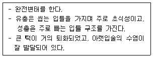

종자산업기사 (2009-07-26 기출문제)
1과목: 종자생산학 및 종자법규
1. 실내저장을 표준으로 하여 종자의 수명을 구분할 때 단명종자에 속하는 것으로만 짝지어진 것은?
- 메밀, 오이, 콩
- 완두, 양파, 배추
- 녹두, 아욱, 벼
- 메밀, 고추. 양파
(정답률: 40%)

2. 채종재배시 격리거리의 범위가 가장 긴 작물은?
- 상추
- 토마토
- 클로버
- 해바라기
(정답률: 60%)
3. F1 종자의 채종에서 웅성불임계통은 무엇으로 이용되는가?
- 종자친
- 유지친
- 화분친
- 화지친
(정답률: 39%)
4. 종자검사를 위한 제출용 종자표본 추출의 원칙으로 가장 적합한 것은?
- 표본은 전체 종자를 대표해야 한다.
- 표본 채취자의 임의로 채취한다.
- 접근이 용이한 부위에서 채취한다.
- 표본은 전체보다 약간 양호한 부위에서 추출한다.
(정답률: 85%)
5. 자가불화합성을 타파하는 방법으로 적절하지 않은 것은?
- 자가불화합성 물질의 생성시기를 회피하기 위하여 뇌수분과 지연수분을 이용한다.
- 불화합반응 조직을 제거하기 위하여 암술에 물리적인 처리를 한다.
- 불화합반응을 억제하기 위하여 인공수분을 실시한다.
- 불화합 유기물질을 파괴하기 위하여 이산화탄소를 처리한다.
(정답률: 46%)
6. 종자산업법상 품종의 보호를 받을 수 있는 종자가 갖추어야 할 요건이 아닌 것은?
- 구별성
- 균일성
- 우량성
- 안정성
(정답률: 93%)
7. 자가불화합성의 유전양식은 불화합성물질의 생성 시기의 차이에 따라 배우자 반응과 아포체 반응으로 구별된다. 아포체형 3핵성 화분의 경우 S유전자가 발현하는 시기는?
- 감수분열 시
- 감수분열 전
- 감수분열 후
- 세포질 분열 후
(정답률: 55%)
8. 자연적으로 씨없는 과실이 형성되는 작물이 아닌 것은?
- 바나나
- 수박
- 감귤류
- 포도
(정답률: 86%)
9. 품종보호권 또는 전용실시권을 침해한 자에게 해당되는 벌칙은?
- 5년 이하의 징역 또는 3천만원 이하의 벌금
- 3년 이하의 징역 또는 2천만원 이하의 벌금
- 5년 이하의 징역 또는 2천만원 이하의 벌금
- 3년 이하의 징역 또는 1천만원 이하의 벌금
(정답률: 84%)
10. 종자가 발아하면서 기관이 분화되는데 어린뿌리가 분화되는 부분은?
- 상배축 생장선단
- 하배축 생장선단
- 조세포
- 난세포
(정답률: 82%)
11. 종자관리사의 자격이 1년간 정지될 수 있는 경우는?
- 종자보증과 관련하여 형의 선고를 받은 경우
- 종자관리사 자격과 관련하여 2회 이상 이중 취업을 한 경우
- 종자보증과 관련하여 고의 또는 중대한 과실로 타인에게 막대한 손해를 가한 경우
- 자격정지 처분을 받은 후 자격정지 처분기간 내에 자격증을 사용한 경우
(정답률: 40%)
12. 품종보호출원에 대한 우선권에 대한 설명으로 가장 바르게 설명한 것은?
- 우선권은 국내에서 선출원과 관련된다.
- 우선권을 주장할 경우는 최초 품종보호출원일 다음 날부터 1년 이내에 출원을 하여야 한다.
- 우선권을 주장하는 자는 최초 품종보호출원한 출원서등본을 3년 이내에 제출하여야 한다.
- 우선권 주장자는 최초의 품종보호출원일로부터 10년까지 심사의 연기를 요청할 수 있다.
(정답률: 79%)
13. 종자를 선별할 경우 그 기준으로 부적합한 것은?
- 육안
- 용적
- 투명도
- 중량
(정답률: 100%)
14. 1대 잡종 품종의 농업적 의의로서 가장 중요한 것은?
- 수량성이 높다.
- 채종이 용이하다.
- F1 종자 값이 싸다
- 열성유전자를 유리하게 이용할 수 있다.
(정답률: 알수없음)
15. 수박의 수확적기를 알아내고자 한다. 다음에서 익은 수박이 아닌 것은?
- 꽃자리를 누르면 탄력이 있다
- 과면에 털이 없고 광택이 난다
- 수확적기 수박의 비중은 1.0이다
- 두드리면 탁음이 난다.
(정답률: 50%)
16. 우량종자와 거리가 먼 것은?
- 순수하고 이형종자가 포함되지 않은 것
- 종자의 활력이 우세한 것
- 종자가 두꺼운 것
- 발아력이 우수한 것
(정답률: 92%)
17. 분쇄해야 하는 종자의 수분측정용 제출시료의 최소중량은?
- 50g
- 100g
- 200g
- 500g
(정답률: 54%)
18. 종자를 육성,증식,생산,조제,양도,대여,수출,수입 또는 전시하는 것을 업으로 하는 것을 무엇이라 하는가?
- 종묘업
- 종자산업
- 종자경영
- 종묘경영
(정답률: 92%)
19. 종자의 안전저장 요건에 해당하는 것은?
- 고온 다습상태
- 고온 저습상태
- 저온 다습상태
- 저온 저습상태
(정답률: 84%)
20. 배추종자 발아율조사 결과 완전묘 83개, 피해묘 2개, 부패묘 2개, 경결함묘 3개, 2차 감염묘 2개, 불발아 종자가 8개 이었다. 이 때 발아율은?
- 85%
- 88%
- 90%
- 94%
(정답률: 알수없음)
2과목: 식물육종학
21. 분자표지(molecular marker)에 대한 설명으로 틀린 것은?
- 동위효소(isozyme) 또는 DNA단편의 품종간 차이를 이용하는 것이다.
- 분자표지가 목표형질의 유전자와 연관되어 있을 때 간접선발의 도구로 사용할 수 있다.
- DNA 분자표지는 환경의 영향을 받아 달리 표현되는 경우가 종종 있다.
- 양친이 달라질 경우 다른 분자표지를 사용해야하는 경우가 있다.
(정답률: 91%)
22. 타가수정 작물은?
- 밀
- 보리
- 양파
- 수수
(정답률: 알수없음)
23. 순계에 대한 설명으로 옳은 것은?
- 순계 내에서도 선발효과가 있다.
- 순계 내의 변이는 환경변이 이다.
- 유전적으로 고정되어 있어 돌연변이가 없다.
- 순계는 계속적인 타가수정을 통하여 얻을 수 있다.
(정답률: 57%)
24. 유전자의 지배가가 누적적인 유전자는?
- 중복유전자
- 복수유전자
- 보족유전자
- 억제유전자
(정답률: 알수없음)
25. 변이가 나타나는 대상의 범위에 따라 분류한 것은?
- 장소변이
- 돌연변이
- 교배변이
- 개체변이
(정답률: 48%)
26. 품종 퇴화의 원인이 될 수 없는 것은?
- 돌연변이
- 환경변이
- 자연교잡
- 미동유전자의 분리
(정답률: 47%)
27. S1,S2,S3,S4가 자가불화합성 유전자일 때, 다음의 유전자의 교배조합에서 F1 채종량이 가장 많은 경우는?
- S2S4 × S2S4
- S1S3 × S1S2
- S1S3 × S1S3
- S1S3 × S2S4
(정답률: 92%)
28. F1 채종에 있어서 웅성불임을 이용하는 작물은?
- 양파
- 배추
- 시금치
- 양배추
(정답률: 72%)
29. AABB*aabb 조합에서 A와 B가 연관된 형질이고 조환가(cross over value)가 0.4이라면 F2 에서 기대할 수 있는 AAbb 개체의 비율은?
- 40%
- 16%
- 4%
- 1.6%
(정답률: 42%)
30. 삼성잡종 AaBbCc × AaBbCc의 교배에서 호모 접합체가 나타나는 비율은?
- 1/2
- 1/4
- 1/8
- 1/16
(정답률: 50%)
31. 인위적 동질배수체의 일반적 특성 중 육종상 불리한 특성은?
- 핵과 세포의 거대화
- 영양기관의 생육증진
- 저항성의 증대
- 임성의 저하
(정답률: 88%)
32. 복교잡을 나타낸 것으로 옳은 것은?
- A×B
- (A×B)×C
- (A×B)×(C×D)
- A×B의 F1에 B를 교잡
(정답률: 92%)
33. 이질배수체가 아닌 것은?
- Raphano-Brassica
- 라이밀
- 양배추
- 서양유채
(정답률: 31%)
34. 포장에서 실시되고 있는 검정법이 아닌 것은?
- 조기검정법
- 적응성검정법
- 생산력검정법
- 자가불화합 화분관 신장검정법
(정답률: 50%)
35. 동질배수성을 이용하는 육종에 관한 설명으로 적합하지 않은 것은?
- 자가수정 작물보다 타가수정 작물이 적합하다.
- 잎과 줄기를 이용하는 작물이 종실을 이용하는 작물보다 적합하다.
- 십자화과 작물보다 화본과 작물에 적합하다.
- 염색체수가 많은 작물보다 염색체수가 적은 작물에 적합하다.
(정답률: 25%)
36. 콜히친을 처리하는 식물체 부위로 적당하지 않은 것은?
- 종자
- 생장점
- 식물체의 선단부위
- 식물체의 노화부위
(정답률: 93%)
37. 식물체의 방사선감수성에 대한 일반적인 현상과 거리가 먼 것은?
- 큰 염색체를 가진 식물들은 작은 염색체를 가진 식물채에서 보다 방사선에 대해 높은 감수성을 가진다.
- 속내의 배수체 종들은 2배체보다 감수성이 약한 경향이 있다.
- 같은 종내에서는 품종에 관계없이 방사선 감수성 정도가 같다.
- 식물체의 내, 외적조건은 그 식물체의 방사선 감수성 정도에 영향을 미친다.
(정답률: 82%)
38. 양적형질에 관한 설명으로 틀린 것은?
- 동의유전자의 작용으로 나타나는 경우가 있다.
- 꽃의 색깔, 잎의 모양을 지수나 색도계 등에 의해 숫자로 나타낼 수 없는 형질이다.
- 연속적인 형질의 변이를 볼 수 있는 경우가 많다.
- 키, 개화기, 성숙기 등과 같이 계측하여 판단 할 수 있는 형질을 말한다.
(정답률: 84%)
39. Brassica napus 의 염색체의 수와 게놈은?
- 2n = 38, AABB
- 2n = 38, AACC
- 2n = 42, AABBCC
- 2n = 42, AABBDD
(정답률: 47%)
40. 양적형질과 질적형질의 유전양식에 대한 설명으로 틀린 것은?
- 양적형질은 환경의 영향을 크게 받는다.
- 양적형질은 polygene에 의해 지배되는 경우가 많다.
- 양적형질은 불연속변이를 질적형질은 연속변이 를 보인다.
- 질적형질 변이의 감별보다 양적형질 변이의 감별이 복잡하고 어렵다.
(정답률: 84%)
3과목: 재배원론
41. 단위결과를 유도하는 식물생장조절제가 아닌 것은?
- PCA
- BNOA
- 2,4-D
- Phosfon-D
(정답률: 37%)
42. 최근 플라스틱 필름을 이용한 멀칭재배가 많이 성행하고 있다. 이 중 투명 필름의 이용효과로 가장 미약한 것은?
- 생육촉진
- 잡초발생
- 한해(旱害)경감
- 지온상승
(정답률: 87%)
43. 파종양식 중 노력이 적게 드나 종자가 많이 소요 되며 생육기간 중 통풍 및 통광이 불량한 방법은?
- 조파
- 점파
- 산파
- 적파
(정답률: 85%)
44. 엽록소 형성에 가장 효과적인 광역은?
- 녹색, 청색 광역
- 녹색, 황색 광역
- 자색, 황색 광역
- 청색, 적색 광역
(정답률: 72%)
45. 토양 미생물로 호기성 세균이며 단독으로 유리 질소를 고정하는 대표적인 세균의 속(屬)은?
- Azotobacter
- Clostridium
- Bacillus
- Phosphaticum
(정답률: 72%)
46. 경실로 인하여 휴면이 야기되는 작물은?
- 고구마
- 보리
- 감자
- 오이
(정답률: 알수없음)
47. 벼의 도복 경감제 이나벤파이드 입제(세리티드)의 사용 적기는?
- 출수 10~20일전
- 출수 20~30일전
- 출수 30~40일전
- 출수 40~50일전
(정답률: 40%)
48. 채종과정에서 십자화과 작물의 성숙과정으로 옳은 것은?
- 녹숙기 - 백숙기 - 갈숙기 - 고숙기
- 백숙기 - 녹숙기 - 갈숙기 - 고숙기
- 녹숙기 - 백숙기 - 고숙기 - 갈숙기
- 백숙기 - 녹숙기 - 고숙기 - 갈숙기
(정답률: 64%)
49. 광과 관련된 작물의 생리작용으로 관계가 먼 것은?
- 광합성
- 일액현상
- 식물의 신장
- 증산작용
(정답률: 100%)
50. 질산환원효소의 구성성분으로 질소대사에 중요한 역할을 하는 원소는?
- 인산
- 칼슘
- 몰리브덴
- 붕소
(정답률: 75%)
51. 저장 중 감자, 양파의 맹아억제에는 효과적이나, 발암성 물질로 밝혀지면서 현재는 사용되지 않고 있는 식물생장조절물질은?
- Amo-1618
- B-Nine
- Phosfon-D
- Maleic hydrazide
(정답률: 70%)
52. 벼에서 장해형 냉해를 가장 받기 쉬운 생육시기는?
- 묘대기
- 분얼기
- 수잉기
- 등숙기
(정답률: 알수없음)
53. 난초의 경제적 대량 번식법으로 가장 적합한 것은?
- 약배양
- PLB배양
- 세포융합
- 유전자 조작
(정답률: 64%)
54. 답리작 맥류재배에서 가장 중요한 품종의 특성은?
- 내병성
- 내충성
- 내습성
- 내비성
(정답률: 50%)
55. 환경보존형 농업의 목표와 거리가 먼 것은?(오류 신고가 접수된 문제입니다. 반드시 정답과 해설을 확인하시기 바랍니다.)
- 생물학적인 순환과 조절기능의 이용
- 고투입을 통한 생산성의 지속적 유지
- 경영방법혁신을 통한 생산성 향상
- 식량의 품질 및 안전성 보장
(정답률: 0%)
56. 사과, 포도 등의 착색에 관계하는 안토시안의 생성을 가장 조장하는 광파장은?
- 적외선
- 적색광
- 황색광
- 자외선
(정답률: 19%)
57. 다음 중 요수량이 가장 큰 작물은?
- 호박
- 수수
- 기장
- 밀
(정답률: 82%)
58. 세포벽의 pectin에 흡착하여 세포벽을 견고하게 하고, 세포의 신장과 분열에 필요하며, 부족시에는 생장점의 조직이 파괴되어 새잎이 기형으로 되고 뿌리 신장이 나빠지는 원소는?
- K
- P
- Ca
- N
(정답률: 70%)
59. 동사온도는 작물 및 작물의 기관에 따라 차이가 있다. 다음중 동사온도가 가장 낮은 것은?
- 고추의 잎
- 시금치의 잎
- 유과기단계의 복숭아 과실
- 감귤의 수체
(정답률: 39%)
60. 작물의 수량을 결정하는 3요소에 해당하지 않는 것은?
- 환경
- 유전성
- 상상력
- 재배기술
(정답률: 100%)
4과목: 식물보호학
61. 감자에 발생하는 바이러스병은?
- 감자역병
- 감자 더뎅이병
- 감자 둘레썩음병
- 감자 잎말림병
(정답률: 32%)
62. 잎은 암갈색 수침상의 부정형 무늬가 생겨 커지면서 암갈색으로 변하고, 잎자루와 줄기는 검게 변하여 썩으며, 괴경은 암갈색으로 물러 썩는 병징을 가진 병은?
- 감자 역병
- 감자 더뎅이병
- 감자 잎말림병
- 감자 둘레썩음병
(정답률: 43%)
63. 저항성에 대한 설명으로 틀린 것은?
- 병원균의 병원성이 식물의 저항성보다 강하면 발병된다.
- 병원균의 병원성이 식물의 저항성과 같으면 보균상태로 발병되지 않는다.
- 품종 저항성은 품종 자체가 선천적으로 가지고 있는 병에 강한 성질이다.
- 환경 저항성은 품종이 기후나 비료 등에 의해 저항성을 가지며 환경이 변화해도 이병성으로 되지 않는다.
(정답률: 59%)
64. 곤충의 특징으로 옳지 않는 것은?
- 몸은 머리, 가슴 및 배의 3부분으로 구별된다.
- 보통 가슴에 2쌍의 날개와 3쌍의 다리가 있다.
- 몸체는 내골격이 특히 발달하였다.
- 호흡계는 기관과 기문으로 구성된다.
(정답률: 84%)
65. 논 잡초인 피의 속명은?
- Monochoria
- Cyperus
- Echinochloa
- Digitaria
(정답률: 50%)
66. 화학농약에 첨가하는 중량제의 구비 조건이 아닌 것은?
- 혼합성
- 분산성
- 비산성
- 습전성
(정답률: 알수없음)
67. 완전변태 하는 곤충은?
- 벌
- 메뚜기
- 매미
- 잠자리
(정답률: 60%)
68. 잡초의 생태적 특성과 관계가 먼 것은?
- 잡초 종자는 강제휴면이 있다.
- 잡초 종자는 기본적으로 휴면성이 없다.
- 경작지에 흑색 비닐이나 부초를 피복하면 잡초발생이 감소한다.
- 답전윤환 작부체계에서는 잡초의 발생이 감소한다.
(정답률: 92%)
69. 작물의 병이 발생하는데 있어서 병에 직접 관계되는 주된 원인은?
- 상인
- 요인
- 주인
- 종인
(정답률: 80%)
70. 혈청학적 병해 진단 방법의 가장 큰 장점은?
- 비용이 적게 든다.
- 대량 검정이 가능하다.
- 개발이 쉽다.
- 비선택적이다.
(정답률: 85%)
71. 병원체의 침입방법 중 자연개구를 통한 침입이 아닌 것은?
- 기공 침입
- 수공 침입
- 밀선 침입
- 각피 침입
(정답률: 47%)
72. 곤충의 알라타체에서 분비되는 호르몬의 종류로서 곤충으로 하여금 유충의 상태를 유지하도록 해주는 것은?
- 유약호르몬
- 탈피호르몬
- 신경분비호르몬
- 알라타체자극호르몬
(정답률: 80%)
73. 잡초의 생리. 생태에 대한 설명으로 틀린 것은?
- 발아에 알맞은 최적온도의 범위는 보통 15~30℃ 이다.
- 경지의 잡초는 대부분 광선을 필요로 하는 호광성 잡초이다.
- 둑새풀은 인산결핍에 견디는 힘이 매우 강하다.
- 쇠비름은 대체로 산성토양에 잘 적응한다.
(정답률: 42%)
74. 식물성 살충제에 속하는 것은?
- 카보
- 다수진
- 메프
- 피레스린
(정답률: 58%)
75. 소화 중독제는 해충의 어느 부위에서 주로 흡수되는가?
- 표피
- 전장
- 중장
- 후장
(정답률: 100%)
76. 어떤 곤충이 종류가 다른 곤충을 잡아먹는 식성을 무엇이라고 하는가?
- 포식성
- 기생성
- 부식성
- 균식성
(정답률: 93%)
77. A유제(50%)를 1000배액으로 희석하여 10a에 200L를 살포하고자 한다. A유제(50%)의 소요량(mL)은?
- 50
- 100
- 150
- 200
(정답률: 47%)
78. 다음 보기가 설명하는 곤충목은?

- 벌목
- 나비목
- 메뚜기목
- 노린재목
(정답률: 79%)
79. 일반적인 작물과 잡초의 관계는?
- 종내경합
- 종간경합
- 중복기생
- 편리공생
(정답률: 70%)
80. 해충의 특이한 행동습성을 이용하는 방법으로 해충이 좋아하는 먹이로 해충을 유인하여 죽이거나, 포장에 짚단을 깔아서 유인하여 죽이거나, 유아등에 해충류를 모이게 하여 죽이는 방법은?
- 포살
- 담수
- 차단
- 유살
(정답률: 67%)